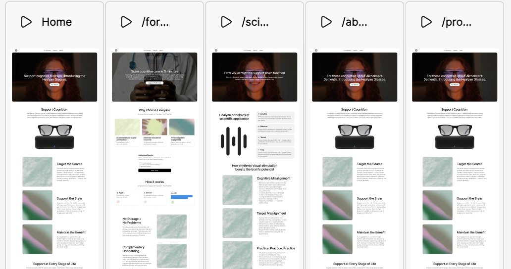
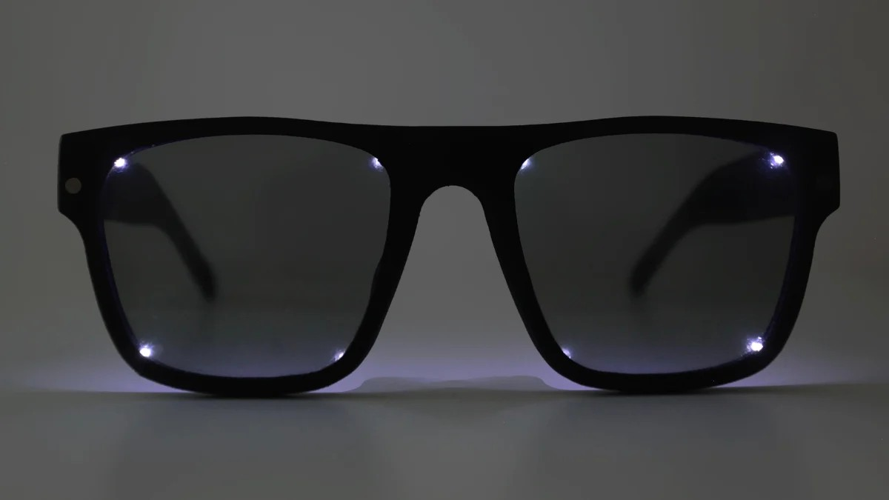

A risk audit of a healthcare device's website marketing claims — resulting in a pivot to a wellness angle, including a rewritten copy and a website redesign that I am currently leading.
The company's name and its exact marketing copy are withheld here to protect a client's confidential business decisions. Findings and language below are generalized to preserve that confidentiality while still showing the actual analysis.

The product is a wearable that delivers rhythmic sensory stimulation, marketed to people worried about cognitive decline in themselves or a parent. It sits in a genuinely promising research area — but "promising research" and "what the marketing site actually says" had drifted apart, and nobody had audited the gap. I was brought on to redesign the site's IA and copy; before I could redesign anything, the first two weeks became an audit instead.

The product: a wearable that delivers rhythmic sensory stimulation.
Auditing every claim on the site against what it would need to prove to be safely marketed.
Method: I read the site the way a regulator would — line by line, flagging every claim as either a low-burden wellness statement or a disease-treatment claim that triggers FDA medical-device requirements, then ranked each by how exposed it left the company.
| Finding type | Risk level |
|---|---|
| A page header used direct disease-treatment language for a specific, named condition — the single most FDA-flaggable phrase on the site. | Critical |
| The footer disclaimer directly contradicted the page's own headline above it. | Critical |
| Third-party trial results ran under a generic heading, with the real (different) device named only in small print. | High |
| Outside safety statistics were framed in a way a reader would take as the company's own safety record. | High |
| A drug-interaction claim and a pediatric-safety claim both appeared with no supporting data. | Moderate |
| Usage instructions read as a clinical dosing protocol rather than general wellness guidance. | Moderate |
The two critical findings went to leadership first — the clearest examples if the page were ever reviewed by the FDA, and the easiest to fix without losing the page's structure.
The audit's real output wasn't a bug list — it was a strategic fork: pursue formal FDA clearance as a medical device (expensive, slow), or reposition under the FDA's General Wellness Policy (general wellness only, no disease claims). I recommended the wellness path — not as a compliance workaround, but as the more honest claim given the evidence. The research on this mechanism is real and promising, but early; a wellness positioning let the company make truthful, calibrated claims instead of implicitly promising a treatment it can't yet back up.
Five rules I wrote to translate the audit into a rebuilt information architecture.
"Reverses cognitive decline and restores mental clarity."
"Is being studied for its potential to support cognitive wellness."
Illustrative example — not the client's actual copy.
Lead with mechanism, not outcome. Mechanism claims are far more defensible than outcome claims — and more honest about what's actually known.
Put regulatory status in the primary visual hierarchy, not the footer. The wellness disclaimer belongs near the primary claims, not in 8-point gray text.
Replace superlative language with calibrated language. "Improves," "reverses," "boosts" become "is designed to," "may support," "is being studied for."
Separate claims by evidence tier, with a visible strength indicator rather than one undifferentiated wall of citations.
Give the caregiver a distinct entry point. Someone buying this for a parent has different risk tolerance than someone monitoring their own health.
Mechanistically established — general research on how this class of stimulation interacts with the body.
Studied for this product — evidence specific to this device and claim, where it exists.
Unproven / actively researched — named honestly as open questions, not implied answers.
Self-monitoring, 55–70
Buying on someone else's behalf, 40–60
Alongside the redesign, I wrote a clinician-facing evidence packet from scratch — the document a physician reads before deciding whether to recommend the product to a patient. It covers the mechanism of action, a study-evidence summary by outcome type, safety and contraindication info, and regulatory status, each claim tied to a citation and tagged by evidence tier.
Writing it meant translating primary neuroscience literature into language a prescribing physician could use in a two-minute conversation with a patient — without dumbing down the mechanism or overstating what it means clinically. That translation, more than the visual design, is the actual deliverable.